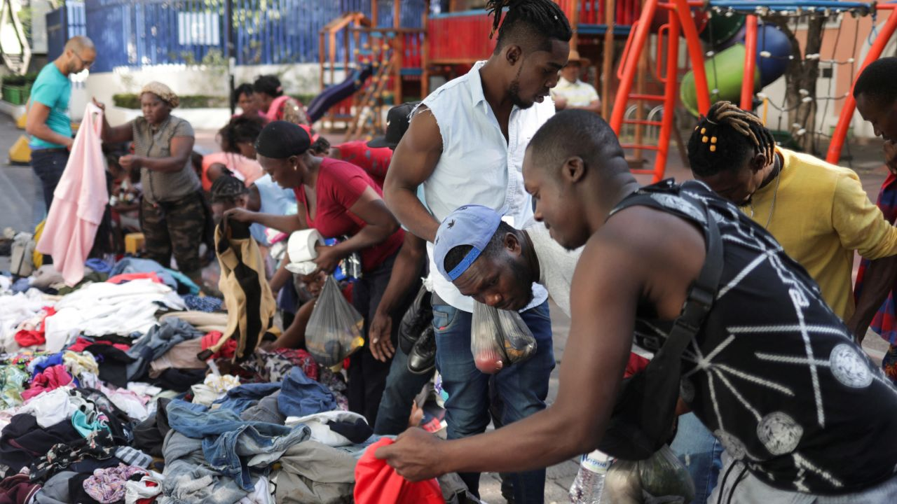

Across Mozambique — from Maputo to Nampula — markets overflow with second-hand clothes imported from Europe and America. What should symbolize solidarity has been transformed into a business model. Donations meant to alleviate poverty have become the raw material of a trade that profits from desperation.
This reality is a national wound. In every market, the same paradox unfolds: the poor buy because they have no alternative, while traders see opportunity in every bundle of discarded clothing. When does solidarity end, and when does exploitation begin?
This trade exposes the cruel logic of global inequality. Poverty itself becomes a market. Dignity is negotiated at the lowest possible price. Clothes are not just fabric; they are symbols of a system that converts compassion into profit.
"Charity that becomes business ceases to be charity. The true gesture of solidarity is the one that liberates."
The real critique is against the global machinery that turns charity into commerce. Mozambique has become the final destination of a cycle where generosity is corrupted and dependence is perpetuated. The poor remain poor, only clothed in the discarded dignity of others.